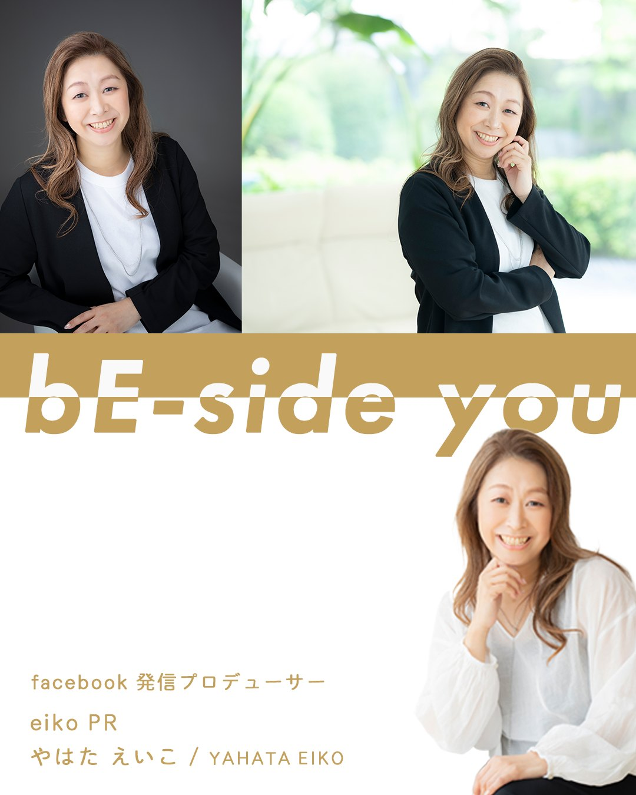
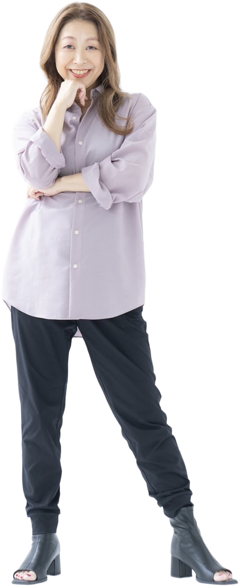

19年続けた会社員を辞めて、
ひとりで仕事をはじめた。
はじめは楽しくて仕方なかった。
だけど、
集客もできない。
売り上げも上がらない。
全くうまくいかない。
変わったのは、
仲間と出会ってから。
応援して、応援される。
投稿は、そのためにある。

Facebookで「応援される人」をつくる専門家
そして、紹介・相談・仕事につながっていく。
Facebookの投稿づくりに、いちばん近くで伴走します。
For You
努力が足りないわけでも、
センスの問題でも、ありません。
Cause
Facebook上で、“信頼が積み重なる動線” がまだできていない。ただ、それだけです。必要なのは投稿テクニックではなく、会う前から信頼される「関係設計」です。
投稿は、売るためではなく、
会う前から信頼をつくるためにある。
Solution
売り込みの文章づくりでは、ありません。あなたのFacebookに、“会う前から信頼される” 動線をつくっていきます。
信頼の動線
読まれる投稿には、共通点があります。自分の物語を見せること。お客さまの目線で書くこと。問いかけで終わること。この3つを、あなたの言葉のまま整えるのが、えいこ流の伴走です。
挑戦の立ち上げから達成まで、企画・ページづくり・応援の集め方を一緒に。
総支援額 1億円突破 ／ 直近2年の伴走成功率 88%
CAMPFIRE 公式パートナー これまでの挑戦を見る配信の企画から当日の運用まで、売れる仕組みを伴走で。
Results
この数字は、テクニックの成果ではありません。応援される関係性を、積み重ねてきた証拠です。
Story
19年続けた会社員を辞めて、
ひとりで仕事をはじめた。
はじめは楽しくて仕方なかった。
だけど、
集客もできない。
売り上げも上がらない。
全くうまくいかない。
変わったのは、
仲間と出会ってから。
応援して、応援される。
投稿は、そのためにある。

ひとりでやらない。
仲間でやる。#応援の経済圏
Type Check
あなたの投稿が「紹介・応援・相談」につながらない理由がわかる、タイプ診断。
6つの質問に答えるだけ。その場で、あなたのタイプと次の一歩がわかります。
YOUR TYPE
Messengerでのご相談はこちら
19人
予告だけで、19人が手を挙げました。
診断のはじまりを、たくさんの方が待っています。
やはた えいこ
YAHATA EIKO ／ eiko PR
Facebook発信プロデューサー